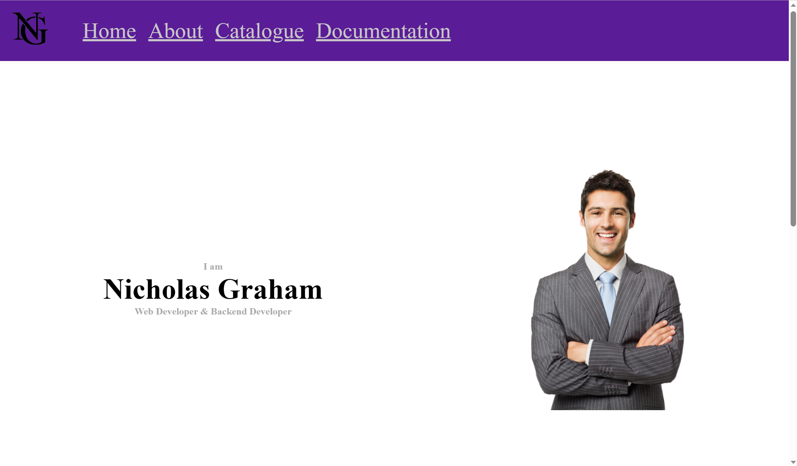

9/15/2023
The Purpose of This Page
The main purpose of this page, more accurately this series of pages, is to document my journey in web development so myself and others can look back on how much has changed. I do not plan on formatting these pages to be super good looking as that is not the point, I want to focus more time on the actual content of the pages, maybe this will change in the future, if it does, chances are you won't be seeing this.
As I am eager to start my first mockup of the landing page, I am leaving this page pretty much as ugly as you can imagine, I will include an image below of what it looks like, beware! It's barebones

9/17/2023
I have decided as I am just getting started that I will include all the early changes on this single page since they most likely won't be huge features. Since the last change (2 days ago) I have learned the very basics of flexbox, so I plan on redoing the landing page using that, I think it will be a good challenge to test how much I remember. Over the next week I will also be learning css grid, which may be replacing flexbox on the landing page, but too much practice is not a bad thing. Below I will include a picture of what the homepage looks like right now without flexbox
Yes it's very bad I'm aware, but I just wanted to get the basic elements down, I am going to try to switch the display to flexbox while keeping everything very similar
As you can see there has been a decent amount of progress made. Below I will detail all the changes I have made today:
- Converted landing page to flexbox
- Added Basis for Header (Need to figure out how to render on every page (might just need to copy code to each page??? There has to be a better way))
- Drew a logo for myself, not a super creative one so most likely just a place holder, in case of change I will include the logo below